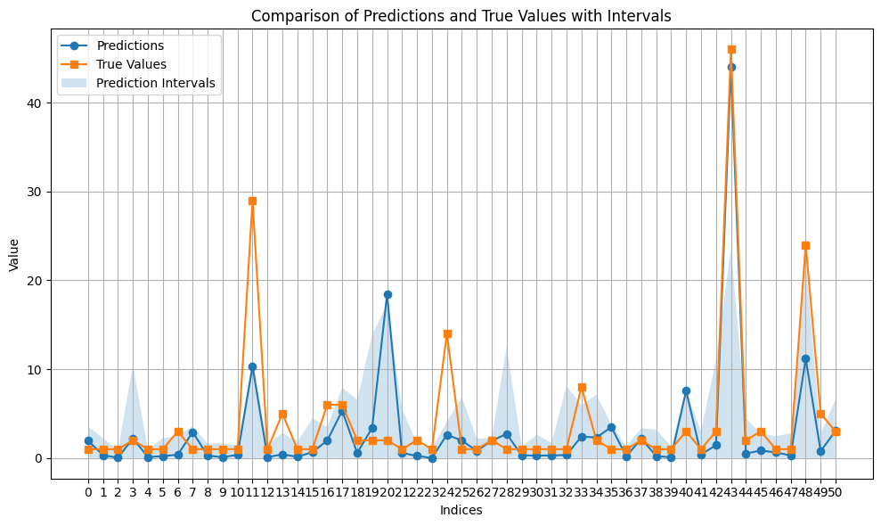
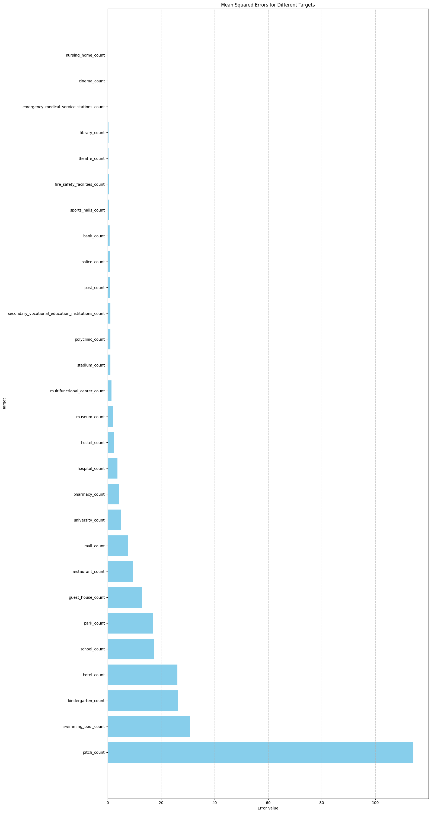
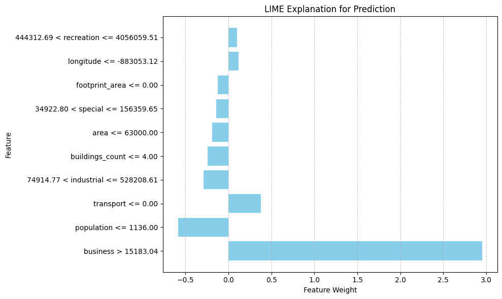

Social Indicators Prediction
[1]:
import pandas as pd
data = pd.read_pickle('./../data/social_regression_data.pickle')
data.head()
[1]:
| population | site_area | is_living | footprint_area | build_floor_area | living_area | non_living_area | buildings_count | agriculture | industrial | ... | guest_house_count | school_count | pitch_count | hospital_count | polyclinic_count | emergency_medical_service_stations_count | restaurant_count | pharmacy_count | longitude | latitude | |
|---|---|---|---|---|---|---|---|---|---|---|---|---|---|---|---|---|---|---|---|---|---|
| 3 | 2154 | 958000.0 | 107.0 | 134350.198599 | 1.486228e+05 | 18790.798548 | 129551.116050 | 973 | 9.895049e+06 | 4.271492e+06 | ... | 0.0 | 0.0 | 0.0 | 0.0 | 0.0 | 0.0 | 0.0 | 0.0 | -771885.613281 | 6.809647e+06 |
| 4 | 1698 | 732000.0 | 15.0 | 167346.131884 | 1.839993e+05 | 19628.059600 | 164371.238284 | 1016 | 3.137606e+06 | 2.275153e+05 | ... | 0.0 | 0.0 | 0.0 | 0.0 | 0.0 | 0.0 | 1.0 | 0.0 | -780323.931010 | 6.841250e+06 |
| 5 | 20169 | 45000.0 | 1484.0 | 897718.375067 | 1.446731e+06 | 530190.233798 | 899757.274216 | 3448 | 6.347738e+04 | 1.899003e+06 | ... | 0.0 | 4.0 | 9.0 | 1.0 | 1.0 | 0.0 | 5.0 | 7.0 | -775855.937394 | 6.821746e+06 |
| 6 | 3393 | 699000.0 | 70.0 | 207072.938797 | 2.546795e+05 | 56015.386519 | 195416.138670 | 502 | 1.859899e+06 | 1.173573e+07 | ... | 0.0 | 0.0 | 0.0 | 0.0 | 0.0 | 0.0 | 1.0 | 0.0 | -798102.040434 | 6.809219e+06 |
| 7 | 15960 | 261000.0 | 225.0 | 479686.323942 | 8.471635e+05 | 353020.537179 | 484596.269902 | 2155 | 1.301242e+06 | 2.936352e+05 | ... | 0.0 | 3.0 | 5.0 | 1.0 | 1.0 | 0.0 | 1.0 | 3.0 | -787756.552231 | 6.821318e+06 |
5 rows × 45 columns
Predicting using quantile regression
[3]:
from blocksnet.machine_learning.regression import SocialRegressor
# sr = SocialRegressor()
# if you want to train one yourself
sr = SocialRegressor(n_estimators=100, max_depth=4, min_samples_split=5)
2025-05-27 16:04:58.876 | WARNING | blocksnet.machine_learning.regression.social.common.model_wrapper:__init__:32 - Keyword arguments provided. The model_path is ignored
Getting data divided into a training and a test sample
[4]:
x_train, x_test, y_train, y_test = sr.get_train_data(data)
Train model
[5]:
sr.train(x_train, y_train, confidence_level=95.0)
2025-05-27 16:05:16.289 | INFO | blocksnet.machine_learning.regression.social.common.model_wrapper:_train_model:80 - Fitting median model
2025-05-27 16:05:47.337 | INFO | blocksnet.machine_learning.regression.social.common.model_wrapper:_train_model:89 - Fitting lower model
2025-05-27 16:05:49.852 | INFO | blocksnet.machine_learning.regression.social.common.model_wrapper:_train_model:100 - Fitting upper model
Save fitted model
[6]:
sr.save_model('./model.pickle')
Model Validation
[7]:
y_pred, pi_lower, pi_upper = sr.evaluate(x_test)
Showing predictions
[8]:
y_pred.head()
[8]:
| nursing_home_count | hotel_count | theatre_count | cinema_count | secondary_vocational_education_institutions_count | university_count | stadium_count | emergency_medical_service_stations_count | kindergarten_count | hostel_count | ... | post_count | swimming_pool_count | library_count | guest_house_count | fire_safety_facilities_count | restaurant_count | police_count | museum_count | bank_count | pitch_count | |
|---|---|---|---|---|---|---|---|---|---|---|---|---|---|---|---|---|---|---|---|---|---|
| 14296 | 0.014379 | -0.000832 | 0.001763 | 0.016099 | 0.039391 | 0.479495 | 0.105324 | 0.005666 | 0.296905 | 0.010605 | ... | 0.072575 | 0.020337 | 0.040035 | 0.033931 | 0.033148 | 0.092938 | 0.037970 | 0.028900 | 0.064677 | 0.987647 |
| 3310 | 0.012930 | 0.803748 | 0.081753 | 0.202503 | 1.084357 | 0.137536 | 1.110656 | 0.230271 | 5.922528 | 0.070684 | ... | 0.302535 | 0.109361 | 0.363499 | 0.212221 | 0.722693 | 1.204709 | 0.836241 | 0.587259 | 0.489967 | 17.555252 |
| 16148 | 0.249490 | 13.239592 | 0.481125 | 1.550649 | 3.687493 | 1.599196 | 2.781085 | 0.267505 | 23.173780 | 0.916293 | ... | 1.557643 | 13.684464 | 1.686338 | 0.224791 | 1.782080 | 15.103293 | 2.445613 | 1.884544 | 1.571543 | 84.765625 |
| 17455 | -0.003019 | 0.009737 | -0.004039 | 0.006393 | 0.019949 | 0.001556 | 0.085916 | -0.000057 | 0.383974 | -0.001581 | ... | 0.144662 | 0.030829 | 0.018814 | 0.171654 | 0.001377 | 0.121550 | 0.095347 | 0.025819 | 0.004237 | 0.626067 |
| 16291 | 0.013056 | 0.088273 | 0.002856 | 0.019799 | 0.034916 | 0.024223 | 0.249959 | 0.007760 | 0.771067 | 0.012497 | ... | 0.444398 | 0.005997 | 0.135191 | 0.156082 | 0.167819 | 0.178831 | 0.075085 | 0.083318 | 0.011640 | 1.925919 |
5 rows × 28 columns
Calculating statistics
[9]:
stats_df = sr.calculate_interval_stats(y_pred, pi_lower, pi_upper, y_test)
Showing prediction intervals
[10]:
pi_lower.head()
[10]:
| nursing_home_count | hotel_count | theatre_count | cinema_count | secondary_vocational_education_institutions_count | university_count | stadium_count | emergency_medical_service_stations_count | kindergarten_count | hostel_count | ... | post_count | swimming_pool_count | library_count | guest_house_count | fire_safety_facilities_count | restaurant_count | police_count | museum_count | bank_count | pitch_count | |
|---|---|---|---|---|---|---|---|---|---|---|---|---|---|---|---|---|---|---|---|---|---|
| 14296 | 0.0 | 0.0 | 0.0 | 0.0 | 0.0 | 0.0 | 0.0 | 0.0 | 0.0 | 0.0 | ... | 0.0 | 0.0 | 0.0 | 0.0 | 0.0 | 0.0 | 0.0 | 0.0 | 0.0 | 0.0 |
| 3310 | 0.0 | 0.0 | 0.0 | 0.0 | 0.0 | 0.0 | 0.0 | 0.0 | 0.0 | 0.0 | ... | 0.0 | 0.0 | 0.0 | 0.0 | 0.0 | 0.0 | 0.0 | 0.0 | 0.0 | 0.0 |
| 16148 | 0.0 | 0.0 | 0.0 | 0.0 | 0.0 | 0.0 | 0.0 | 0.0 | 0.0 | 0.0 | ... | 0.0 | 0.0 | 0.0 | 0.0 | 0.0 | 0.0 | 0.0 | 0.0 | 0.0 | 0.0 |
| 17455 | 0.0 | 0.0 | 0.0 | 0.0 | 0.0 | 0.0 | 0.0 | 0.0 | 0.0 | 0.0 | ... | 0.0 | 0.0 | 0.0 | 0.0 | 0.0 | 0.0 | 0.0 | 0.0 | 0.0 | 0.0 |
| 16291 | 0.0 | 0.0 | 0.0 | 0.0 | 0.0 | 0.0 | 0.0 | 0.0 | 0.0 | 0.0 | ... | 0.0 | 0.0 | 0.0 | 0.0 | 0.0 | 0.0 | 0.0 | 0.0 | 0.0 | 0.0 |
5 rows × 28 columns
[11]:
pi_upper.head()
[11]:
| nursing_home_count | hotel_count | theatre_count | cinema_count | secondary_vocational_education_institutions_count | university_count | stadium_count | emergency_medical_service_stations_count | kindergarten_count | hostel_count | ... | post_count | swimming_pool_count | library_count | guest_house_count | fire_safety_facilities_count | restaurant_count | police_count | museum_count | bank_count | pitch_count | |
|---|---|---|---|---|---|---|---|---|---|---|---|---|---|---|---|---|---|---|---|---|---|
| 14296 | 0.800304 | 1.000252 | 0.000069 | 0.000049 | 0.158654 | 0.000215 | 1.000184 | 0.000031 | 1.995936 | 0.000027 | ... | 1.833845 | 0.000129 | 0.949811 | 0.106655 | 1.000122 | 1.000830 | 0.134224 | 0.355738 | 1.000056 | 2.654914 |
| 3310 | 0.800304 | 6.321808 | 0.934067 | 1.099999 | 3.683720 | 2.214749 | 4.400317 | 1.064502 | 14.263688 | 1.000000 | ... | 1.839819 | 0.999986 | 1.761400 | 1.722426 | 2.808025 | 8.334574 | 3.968300 | 4.091033 | 2.599319 | 38.652114 |
| 16148 | 1.200304 | 49.796808 | 2.152624 | 2.460287 | 6.560348 | 4.628682 | 6.023683 | 1.729038 | 36.571412 | 2.704440 | ... | 2.497692 | 81.805113 | 3.051844 | 11.955599 | 4.280855 | 22.667316 | 5.653427 | 4.226640 | 2.697712 | 103.612669 |
| 17455 | 0.000027 | 1.000252 | 0.000069 | 0.000049 | 0.000340 | 0.000215 | 1.821733 | 0.000031 | 1.011686 | 0.000027 | ... | 1.523892 | 0.000129 | 0.877675 | 1.335098 | 1.000122 | 1.000830 | 0.436661 | 0.297617 | 1.000056 | 2.118286 |
| 16291 | 0.800304 | 1.669386 | 0.459638 | 0.000049 | 1.100385 | 0.000215 | 1.902446 | 0.000031 | 3.415354 | 0.000027 | ... | 1.780039 | 0.999986 | 1.114143 | 2.099003 | 1.669316 | 1.999971 | 1.647817 | 1.395385 | 1.000056 | 6.649416 |
5 rows × 28 columns
Showing validation statistics
[12]:
stats_df
[12]:
| y | coverage_percentage | mean_interval_width | mse | rmse | mae | r2 |
|---|---|---|---|---|---|---|
| nursing_home_count | 99.473684 | 0.421085 | 0.024088 | 0.155203 | 0.046052 | -0.272759 |
| hotel_count | 97.368421 | 3.772173 | 26.111585 | 5.109950 | 1.009036 | 0.276750 |
| theatre_count | 96.842105 | 0.547877 | 0.358543 | 0.598784 | 0.169514 | 0.364897 |
| cinema_count | 97.192982 | 0.437983 | 0.102323 | 0.319880 | 0.108495 | 0.146454 |
| secondary_vocational_education_institutions_count | 96.491228 | 1.577391 | 1.027018 | 1.013419 | 0.379245 | 0.678409 |
| university_count | 96.491228 | 1.205866 | 4.898239 | 2.213197 | 0.493575 | 0.370108 |
| stadium_count | 97.192982 | 2.360784 | 1.096632 | 1.047202 | 0.503562 | 0.576055 |
| emergency_medical_service_stations_count | 97.894737 | 0.231561 | 0.102410 | 0.320016 | 0.096631 | 0.361666 |
| kindergarten_count | 96.315789 | 8.174934 | 26.301057 | 5.128456 | 1.679345 | 0.827755 |
| hostel_count | 97.192982 | 0.457503 | 2.267950 | 1.505971 | 0.253160 | -1.489247 |
| park_count | 95.614035 | 6.418581 | 16.817835 | 4.100955 | 1.457848 | 0.624552 |
| multifunctional_center_count | 98.596491 | 2.534885 | 1.495145 | 1.222761 | 0.450774 | 0.535752 |
| pharmacy_count | 96.491228 | 1.901912 | 4.224587 | 2.055380 | 0.569804 | 0.435232 |
| sports_halls_count | 97.368421 | 0.367853 | 0.672834 | 0.820265 | 0.181746 | -0.186414 |
| hospital_count | 98.771930 | 3.738856 | 3.686516 | 1.920030 | 0.798328 | 0.515673 |
| school_count | 96.315789 | 8.363565 | 17.436128 | 4.175659 | 1.668863 | 0.818749 |
| mall_count | 97.368421 | 4.266809 | 7.596958 | 2.756258 | 0.893124 | 0.747427 |
| polyclinic_count | 97.192982 | 1.962443 | 1.069309 | 1.034074 | 0.393067 | 0.545571 |
| post_count | 97.368421 | 1.930996 | 0.866621 | 0.930925 | 0.459623 | 0.535083 |
| swimming_pool_count | 97.894737 | 2.582380 | 30.738956 | 5.544272 | 0.565730 | 0.465928 |
| library_count | 96.842105 | 1.601277 | 0.328383 | 0.573047 | 0.284873 | 0.448237 |
| guest_house_count | 96.140351 | 2.934491 | 12.888878 | 3.590108 | 0.845219 | 0.317789 |
| fire_safety_facilities_count | 97.543860 | 1.807037 | 0.529556 | 0.727706 | 0.368584 | 0.679995 |
| restaurant_count | 95.964912 | 4.815160 | 9.405612 | 3.066857 | 1.086276 | 0.558713 |
| police_count | 97.192982 | 1.719624 | 0.833359 | 0.912885 | 0.404326 | 0.646310 |
| museum_count | 95.964912 | 1.765682 | 1.956423 | 1.398722 | 0.454936 | -0.054753 |
| bank_count | 98.070175 | 1.761644 | 0.774361 | 0.879978 | 0.325235 | 0.448727 |
| pitch_count | 95.789474 | 21.877662 | 114.181879 | 10.685592 | 4.007621 | 0.905130 |
[22]:
import numpy as np
import matplotlib.pyplot as plt
def visualize_prediction(target_name : str, y_pred, pi_lower, pi_upper, y_test):
# Filter data where y_test values are positive
mask = y_test[target_name].values > 0
filtered_pred_df = y_pred[mask]
filtered_pi_lower = pi_lower[mask]
filtered_pi_upper = pi_upper[mask]
filtered_y_test = y_test[mask]
# Parameters for slicing (default is full filtered range)
start_idx = 0 # Starting index (can be changed)
end_idx = 50 # Ending index (can be changed)
# Extract data from filtered DataFrames with slicing
x = np.linspace(0, len(filtered_pred_df) - 1, len(filtered_pred_df))[start_idx:end_idx + 1]
y_pred = filtered_pred_df[target_name].values[start_idx:end_idx + 1]
y_test = filtered_y_test[target_name].values[start_idx:end_idx + 1]
# Extract intervals from pi_df (now stored as tuples)
lower_bound = filtered_pi_lower[target_name].values[start_idx:end_idx + 1]
upper_bound = filtered_pi_upper[target_name].values[start_idx:end_idx + 1]
# Create the plot
plt.figure(figsize=(10, 6))
plt.plot(x, y_pred, label='Predictions', marker='o')
plt.plot(x, y_test, label='True Values', marker='s')
plt.fill_between(x, lower_bound, upper_bound, alpha=0.2, label='Prediction Intervals')
# Configure the plot
plt.xlabel('Indices')
plt.ylabel('Value')
plt.title('Comparison of Predictions and True Values with Intervals')
plt.legend()
plt.grid(True)
plt.xticks(x)
plt.tight_layout()
[23]:
target_name = 'pharmacy_count'
visualize_prediction(target_name, y_pred, pi_lower, pi_upper, y_test)

Error for different targets
[19]:
import matplotlib.pyplot as plt
import numpy as np
# Assuming stats_df is obtained from calculate_interval_stats and has been transposed
# Example: pred_df, pi_df = ir.predict_with_intervals(X_test, inverse_transform=False)
# stats_df = ir.calculate_interval_stats(pred_df, pi_df, y_test).T
# Extract MSE values and target names from transposed stats_df
mse = stats_df['mse'].values
target_names = stats_df.index
# Sort by descending MSE
sorted_indices = np.argsort(mse)[::-1]
sorted_mse = mse[sorted_indices]
sorted_targets = target_names[sorted_indices]
# Create horizontal bar plot
plt.figure(figsize=(16, 30))
plt.barh(sorted_targets, sorted_mse, color='skyblue')
# Add labels and title
plt.ylabel('Target')
plt.xlabel('Error Value')
plt.title('Mean Squared Errors for Different Targets')
# Add grid and save plot
plt.grid(axis='x', linestyle='--', alpha=0.7)
plt.tight_layout()
plt.plot()
[19]:
[]

LIME Prediction
[ ]:
import pandas as pd
from lime.lime_tabular import LimeTabularExplainer
import matplotlib.pyplot as plt
# Target column
column = 'university_count'
# Fill missing values in y_train
y_train = y_train.fillna(0)
# Use ir model for predictions
pred_df, pi_df = sr.evaluate_with_intervals(X_test, inverse_transform=False)
# Get MSE from stats_df (assuming stats_df is transposed)
stats_df = sr.calculate_interval_stats(pred_df, pi_df, y_test)
mse = stats_df.loc[column, 'mse']
# Print MSE
print(f'Mean Squared Error: {mse:.3f}')
# Helper function for LIME to predict with ir model for the specific column
def predict_fn(X):
# Convert input to DataFrame with correct column names
X_df = pd.DataFrame(X, columns=X_train.columns)
# Get predictions from ir model
pred_df, _ = sr.evaluate_with_intervals(X_df, inverse_transform=False)
# Return predictions for the specific column
return pred_df[column].values
# Create LIME explainer for tabular data
explainer = LimeTabularExplainer(
training_data=X_train.values, # Convert DataFrame to numpy array
feature_names=X_train.columns, # Feature names
class_names=[column], # Target name for regression
mode='regression', # Task type: regression
random_state=42
)
# Select one instance for interpretation (e.g., first from test set)
i = 0
instance = X_test.iloc[i].values.reshape(1, -1)
# Get explanation for the selected instance
explanation = explainer.explain_instance(instance[0], predict_fn)
# Print prediction and real value
print("Predicted value:", pred_df[column].iloc[i])
print("Real value:", y_test[column].iloc[i])
print("Explanation:")
print(explanation.as_list())
# Get explanation as a list
explanation_list = explanation.as_list()
# Split explanation into features and weights
features, weights = zip(*explanation_list)
# Create horizontal bar plot
plt.figure(figsize=(10, 6))
plt.barh(features, weights, color='skyblue')
# Add labels and title
plt.xlabel("Feature Weight")
plt.ylabel("Feature")
plt.title("LIME Explanation for Prediction")
# Add grid and save plot
plt.grid(axis='x', linestyle='--', alpha=0.7)
plt.tight_layout()
plt.plot()
Mean Squared Error: 4.898
Predicted value: 0.479
Real value: 0.0
Explanation:
[('business > 15183.04', 2.9534802613554785), ('population <= 1136.00', -0.5860909439229887), ('transport <= 0.00', 0.3809469174382578), ('74914.77 < industrial <= 528208.61', -0.2871944980298722), ('buildings_count <= 4.00', -0.23936306374227934), ('area <= 63000.00', -0.1874804409055796), ('34922.80 < special <= 156359.65', -0.1421858470028649), ('footprint_area <= 0.00', -0.12259403792263908), ('longitude <= -883053.12', 0.12092895926078623), ('444312.69 < recreation <= 4056059.51', 0.10099483719723343)]
[]
